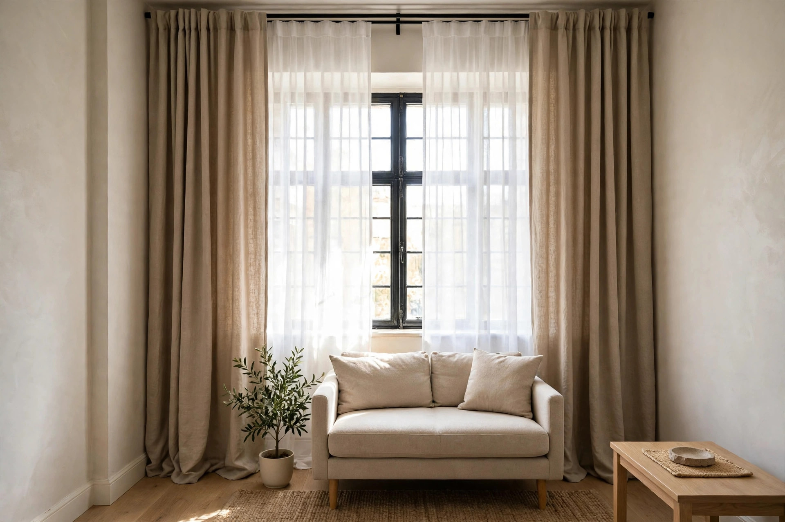

Budget Decor & DIY
Budget Curtain Hacks That Look Expensive in a Small Room
Intro
Curtains are the biggest piece of fabric in a small room, so they set the mood more than any cushion or picture. But shop curtains in the right length can cost a fortune, and short, cheap-looking curtains make a room feel smaller than it is. The good news is that most expensive-looking curtains are just cheap panels hung well — high, wide and full — and every hack in this guide costs under $20.
This guide has 12 budget curtain hacks — cheap panels hung high, layered sheers and tie-backs — for a small room. Start with the window you look at most, and hang the curtains higher than you think: that one change alone makes the ceiling look taller.

1. Hang the rod high and wide — $0
The most expensive-looking hack costs nothing: mount the curtain rod 10–15 cm above the window frame, and 15–20 cm wider than the window on each side. The curtains then cover the wall, not just the glass, and the window looks bigger while the ceiling looks taller. When the curtains are open, they sit on the wall beside the window and let in full light. Measure twice before you drill — or use adhesive rod holders if you rent.
2. Let cheap panels touch the floor — $10–$15
Curtains that end at the sill look cheap; curtains that just kiss the floor look tailored. Buy the longest cheap panels you can find — 228 cm is usually cheaper than made-to-measure — and let them pool very slightly on the floor, or hem them to 1 cm above it. A pair of long panels costs about $12. If they are too long, iron-on hemming tape shortens them in ten minutes without sewing, and the hem is invisible from the room.
3. Double the panels for fullness — $10–$15
One thin panel per side looks flat and cheap; two panels per side look full and expensive, even when the fabric is thin. Buy two pairs of the cheapest panels in the same colour — about $12 for four panels — and hang two on each side. The extra fullness catches the light and hides the fact that the fabric is thin. This works best with plain colours; patterned panels doubled can look too busy in a small room.
4. Layer a sheer behind a solid panel — $8–$12
A sheer curtain behind a solid one gives you privacy in the day and darkness at night, and it looks like a layered designer window. A sheer panel costs about $5, and a second cheap rod or a double rod about $7. Hang the sheer on the inner rod and the solid panels on the outer one. In the day, close the sheer and open the solid panels; at night, close both. The sheer also softens harsh light in a small, bright room.
5. Use a shower curtain as a curtain panel — $5–$8
A fabric shower curtain is a wide, long, cheap piece of fabric — often 180 cm wide for about $6 — and in a plain colour it is indistinguishable from a curtain panel once hung. Use curtain rings with clips to hang it from a rod, and hem the bottom if it is too long. Choose a plain or subtly patterned shower curtain, and avoid obvious bathroom prints. This is the cheapest way to cover a wide window or a sliding door in a rental.
6. Clip rings instead of a sewn heading — $4–$7
Curtain rings with clips cost about $5 for a pack of ten, and they turn any flat piece of fabric — a sheet, a tablecloth, a length of cloth — into a curtain. Clip the fabric at even intervals, hang the rings on the rod, and the fabric falls in soft folds. Clips also make it easy to take curtains down for washing, and to swap them with the seasons. Space the clips evenly — about 15 cm apart — so the folds look regular.
7. A tie-back that lifts the whole room — $3–$6
A simple tie-back — a length of ribbon, a strip of fabric, or a magnetic tie-back for about $4 a pair — holds the curtain to the side of the window and lets in more light. Tie the curtain back at about two-thirds of its height, not halfway, for the most elegant drape. A tie-back in a contrasting colour becomes a small decoration of its own. In a small room, tied-back curtains make the window look wider and the room brighter.
8. Iron-on hemming tape for the perfect length — $3–$5
The difference between cheap and tailored curtains is often just the hem. Iron-on hemming tape costs about $4 and shortens or levels a curtain without a sewing machine: fold the hem, iron the tape inside, and the fold stays. Use it to make two panels exactly the same length, and to take up curtains that pool too much on the floor. A level hem is invisible, but an uneven one is the first thing a guest notices.
9. A tension rod inside the window frame — $5–$8
A tension rod fits inside the window frame with no drilling, so it is ideal for renters — and it is perfect for a sheer, a cafe curtain or a blackout liner behind the main curtains. A tension rod costs about $6. Hang a sheer on it for daytime privacy, and keep the main curtains on the outer rod. Tension rods also work inside a wardrobe or an open shelf, as a hanging rail for scarves or cleaning cloths.
10. Dye white panels to match the room — $5–$8
White cotton panels are the cheapest curtains in the shop, and a packet of fabric dye for about $6 turns them any colour you want. Dye them in the washing machine or a bucket, following the packet instructions, and you get made-to-match curtains for under $15 a pair. Dye both panels together, so the colour matches exactly. A soft sage, warm cream or dusty blue dyed at home looks far more expensive than the white panels you started with.
11. A valance from a single panel — $6–$10
A short valance across the top of the window hides the rod, the heading and the top of the panels, and makes the whole window look finished. Make one from a single cheap panel: cut it to about 40 cm deep, hem the cut edge, and hang it on the same rod in front of the main curtains. A valance in the same fabric as the curtains looks tailored; one in a contrasting pattern becomes the room's accent. It also hides a window that is shorter than the wall.
12. Keep one window bare and dress the other — $0
The cheapest idea costs nothing: in a room with two windows, dress one properly and leave the other with just a sheer, or bare. Two fully dressed windows in a small room can feel heavy; one dressed window becomes the feature, and the bare one lets in light. Choose the window the sofa faces, hang its curtains high and full, and let the other window stay simple. In a small flat, restraint looks more expensive than excess.
Conclusion
Expensive-looking curtains are not about expensive fabric — they are about hanging cheap panels high, wide and full, and letting them touch the floor. A high rod, doubled panels and a sheer behind them can make a $12 pair of curtains look like a $120 pair. Start with the window you see most, hang the rod higher than the frame, and the whole room will look taller by tonight.
Budget recap
- Long panels, hung high: ~$12 - Sheer layer + tension rod: ~$11 - Clip rings + tie-backs: ~$9
Total for one dressed window: ~$10–$20 — or $0 by moving the rod higher and wider.
Pinterest pin titles
- Budget Curtain Hacks That Look Expensive in a Small Room
- 12 Curtain Hacks That Make Cheap Panels Look Expensive
- Hang Them High: 12 Budget Curtain Ideas for Tiny Rooms